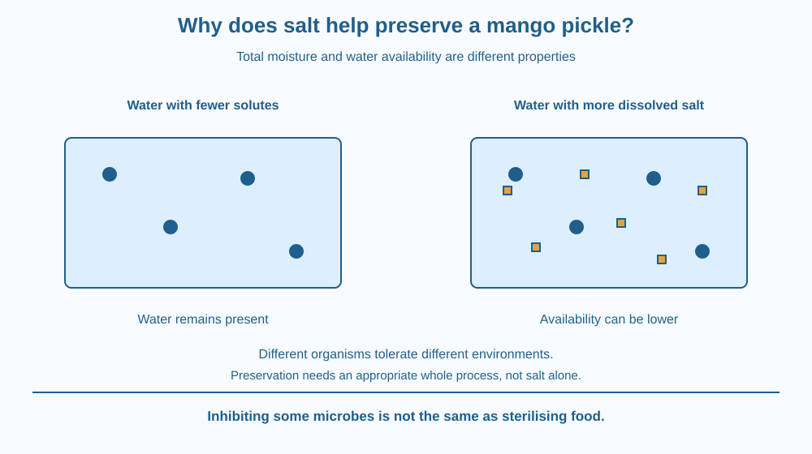

Explain how dissolved salt can reduce water availability for many microorganisms. Distinguish total moisture from water activity and recognise preservation as a system with several controls. This is a mechanism lesson, not a recipe or a method for deciding whether an unknown pickle is safe to eat.
A mango pickle can contain moist pieces of fruit yet resist some kinds of spoilage better than an untreated moist fruit sample. Simply counting visible water is therefore not enough to explain microbial growth.
Salt is one part of many preservation methods. When dissolved, it changes the environment experienced by microorganisms. The useful question is how readily water is available for their activity, not whether the jar looks wet or dry.
Other ingredients and handling also matter. Explaining one mechanism must not become a promise that adding any amount of salt makes every food safe indefinitely.
Microorganisms need suitable conditions to grow. Water availability is one important factor, alongside temperature, nutrients, acidity and other conditions. Different organisms tolerate different environments, so a single statement about all microbes would be inaccurate.
Dissolved salt changes water's behaviour in a solution. Scientists describe the relevant availability using water activity, a measure linked to the water's tendency to escape compared with pure water under the same conditions. It is not simply the percentage of the food that is water.
A moist food can therefore have lower water activity than another equally moist food if its dissolved components differ. Water remains present, but the conditions for microbial use have changed. This distinction is the central mechanism of the lesson.
For many microorganisms, a sufficiently low water activity limits growth. Cells face difficulty maintaining the water conditions needed for their functioning. We do not repeat the earlier detailed account of diffusion; the focus is the preservation consequence of changing the food environment.
Salt does not necessarily kill every organism immediately. Some microbes tolerate salty conditions, and survival is different from active growth. A food that inhibits one group can still be vulnerable to another. A jar's appearance cannot establish the status of every microorganism.
Traditional pickles often combine several preservation hurdles, which may include salt, acidity, drying, suitable processing and storage practices. Oil can influence exposure and surface conditions, but it is not a universal sterilising layer. Their combined effect depends on the actual recipe and handling.
Adding water can alter the concentration of dissolved components and the local conditions. Contamination introduced during handling can also matter. These are reasons to follow a reliable established food procedure, not instructions for improvising a safe concentration in this lesson.
A numerical water-activity claim requires measurement or well-established information about a specified food. We therefore provide no invented salt percentage, storage life or microbial reduction statistic. The mechanism can be explained accurately without pretending a classroom drawing certifies an actual jar.
Draw two foods containing similar amounts of water. In one, add many dissolved-solute symbols. Put separate labels for total water and availability rather than using the same label for both.
Then draw a microorganism beside each environment. Mark that growth depends on the surrounding conditions and on the organism's tolerance. Do not cross out every microbe in the saltier example; that would incorrectly imply universal destruction.
Finally add several controls around the food: appropriate preparation, acidity where relevant, storage and clean handling. The model shows that salt is one component of a preservation system. It is not a replacement for the rest of that system.
The SVG compares moisture amount with water availability. Blue water symbols remain present in both panels, while amber dissolved-salt symbols are more numerous in one. A separate growth-condition panel states that organisms differ in tolerance.
Arrows connect dissolved components with changed water activity, then with possible limits on microbial growth. They do not represent measured values for a real mango pickle.
A final caption distinguishes inhibition from sterilisation. The diagram also shows other preservation controls so it cannot reasonably be read as a recipe saying that one ingredient alone guarantees safe storage.

Many Indian households prepare achar using established combinations of ingredients and processes. The broad science helps explain why those procedures control several conditions rather than relying only on whether fruit pieces look moist.
Commercial preservation also uses measured and validated controls. A labelled product's storage directions concern its actual formulation and processing. A general classroom explanation is not a substitute for those instructions or a reason to extend a storage period.
Never taste an experimental or suspicious food to test the theory. A changed smell, colour or texture can prompt adult attention, but the absence of an obvious change does not prove that every food hazard is absent.
Use paper and coloured pencils. Do not prepare a storage experiment, grow unknown microbes or taste old pickle.
Ask a partner to identify two false conclusions the picture must avoid: all moist foods have the same microbial conditions, and all microbes are killed by any salt addition. Revise the drawing if it suggests either. This is a conceptual activity rather than a measurement of a real food sample.
Suppose a food has lower water activity but still contains visible liquid. Why is that not a contradiction? Separate the amount of water present from its chemical availability in the particular mixture.
Now imagine that an organism can tolerate the salt level. Explain why preserving against some microorganisms does not automatically establish protection against all. A mechanism has a target range and conditions, not a magical universal effect.
What does water activity concern?
Answer: A — Water activity describes availability and is not identical to total moisture content.
Why can salt help limit microbial growth?
Answer: B — Dissolved salt can create conditions that inhibit many organisms.
A moist salted food shows no obvious spoilage. What is the soundest statement?
Answer: C — Microbes differ and preservation depends on the full formulation and handling process.
Design an educational label titled “Salt is one hurdle.” It should explain changed water availability and distinguish growth inhibition from sterilisation. Include at least two other controls relevant to a specified established preservation process.
Do not write a recipe, a salt dose or a guaranteed storage life. The label's purpose is to clarify why a validated whole procedure matters, not to certify food safety from a single ingredient or a five-minute classroom observation.
Two foods with similar total moisture can offer different conditions for microbial growth. Measuring what is present is not always the same as measuring how available it is. Water activity expresses that distinction more usefully than the simple visual judgement that a food looks wet.
Dissolved salt can lower water availability and inhibit many microbes, but preservation depends on the organism, formulation and whole handling process.